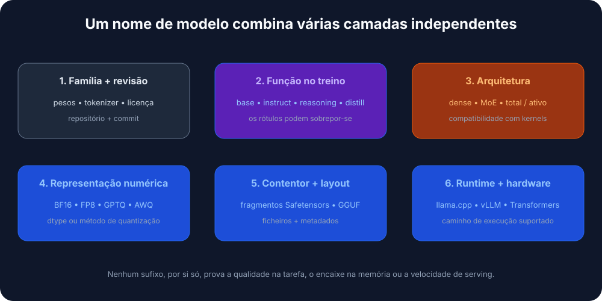
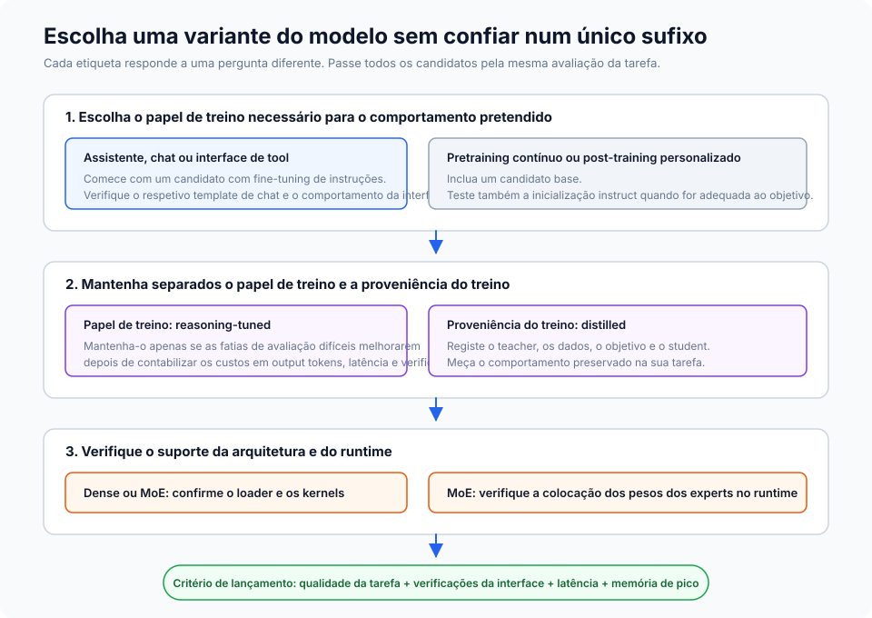
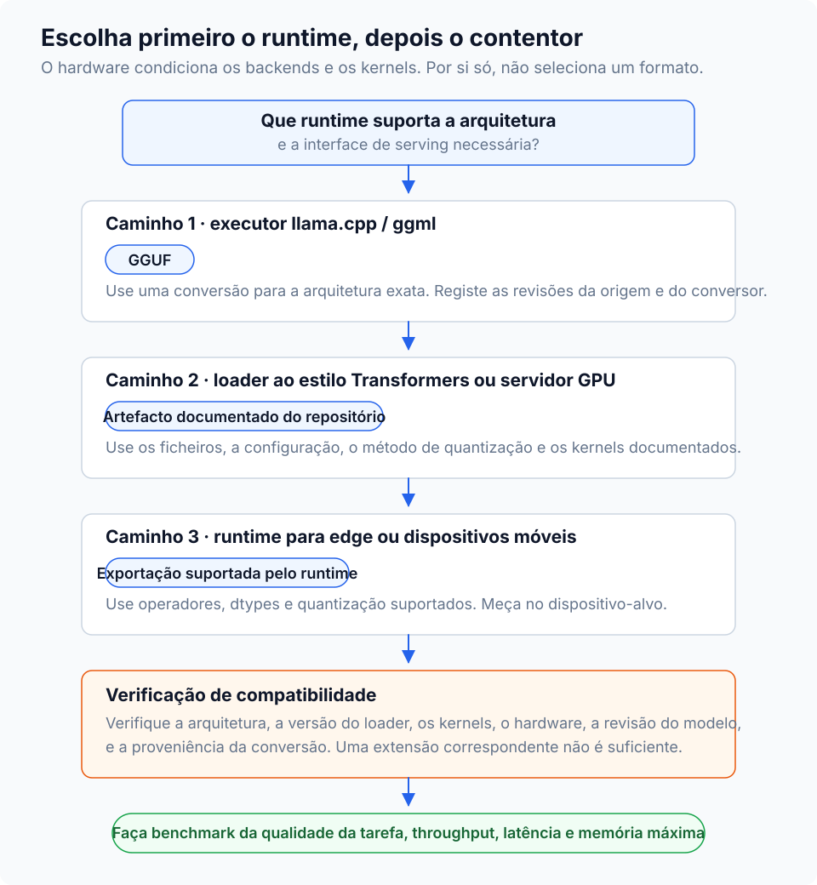
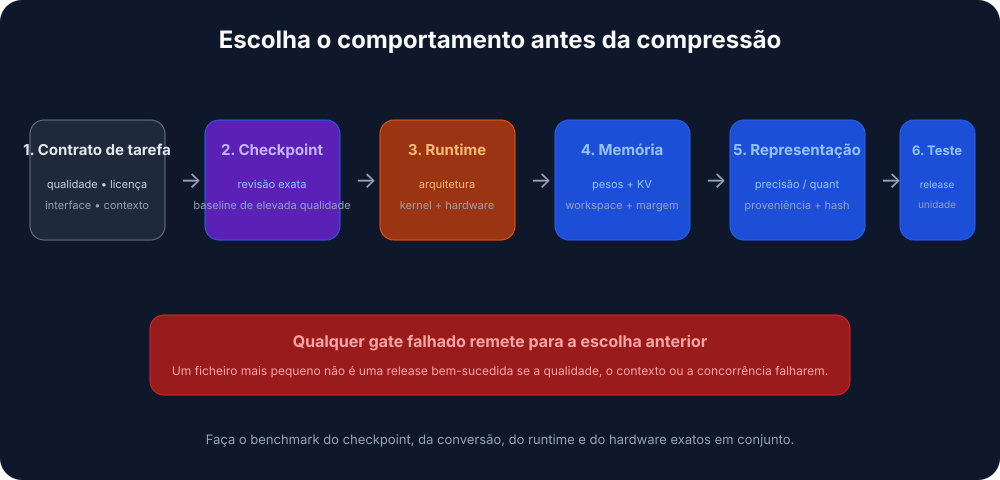

Tradução automática
Este artigo foi traduzido automaticamente a partir da versão original em inglês.
Variantes e Formatos de Ficheiro de LLM Open-Source: Instruct, GGUF, GPTQ, AWQ e MoE
Porque é que os LLM open-source têm tantos nomes confusos?
Provavelmente já viste nomes como Llama-3.1-8B-Instruct.Q4_K_M.gguf ou Mistral-7B-v0.3-A3B.awq e perguntaste-te para que servem os sufixos. Parecem ruído, mas na verdade estão a indicar duas coisas diferentes ao mesmo tempo.
Os LLM open-source variam ao longo de duas dimensões independentes:
- Variante do modelo: o sufixo no nome (
-Instruct,-Distill,-A3B) descreve como o modelo foi treinado e para que está otimizado. - Formato de ficheiro: a extensão (
.gguf,.gptq,.awq) descreve como os pesos são armazenados e onde correm melhor (CPU, GPU, mobile).
A variante decide o que o modelo consegue fazer. O formato decide onde pode correr de forma eficiente.

Se confundires estas duas coisas, vais perder uma noite a perseguir erros de CUDA com um modelo que nunca iria caber na tua placa de qualquer forma.
Variantes de modelo explicadas (a receita)
A variante diz-te por que tipo de treino passaram os pesos.
Modelos Base
O modelo pré-treinado bruto. Aprendeu padrões de linguagem a partir de enormes corpus de texto, mas nunca foi treinado para seguir instruções; tudo o que faz é prever o token seguinte.
Usas este tipo de modelo quando planeias fazer fine-tuning com os teus próprios dados, quando estás a fazer investigação e queres a base “pura”, ou quando queres especificamente um modelo sem treino de alignment pelo meio.
O trade-off é que não segue instruções de forma fiável. Pergunta-lhe “Qual é a capital de França?” e pode responder “e qual é a capital da Alemanha?” porque, do ponto de vista dele, começaste uma lista de perguntas.
Modelos Instruct / Chat
Um modelo base que passou por treino adicional (Supervised Fine-Tuning mais RLHF) para saber seguir instruções humanas. É isto que a maioria das pessoas quer realmente quando diz que “quer um LLM”.
É a escolha certa para chatbots, agentes e RAG. O mesmo para function calling, utilização de ferramentas e ajuda de programação no dia a dia. Aproximadamente 95% dos casos de uso em produção ficam aqui.
O custo é que tende a ser um pouco maior e mais lento do que o modelo base devido ao treino extra, e o alignment pode torná-lo menos “criativo” porque foi orientado para ser previsível e útil.
Modelos de Reasoning / CoT
Uma geração mais recente, como DeepSeek-R1 ou os derivados de o1, treinada com reinforcement learning de Chain-of-Thought. “Pensam” antes de responder: geram tokens internos de raciocínio para resolver lógica complexa, matemática ou problemas de código antes de produzir a resposta final.
Brilham em tarefas difíceis de programação, debugging, problemas matemáticos e puzzles de lógica. Também tendem a alucinar menos porque verificam melhor o próprio trabalho.
O problema é a latência. Produzem um fluxo longo de tokens de “pensamento” que talvez nem vejas, mas continuas à espera deles. Também podem ser desnecessariamente verbosos para prompts triviais.
Modelos destilados
Um modelo “student” mais pequeno treinado para imitar um “teacher” maior. O resultado é conhecimento comprimido: tipicamente 70-80% da qualidade original com 30-50% do tamanho.
São uma boa opção para dispositivos mobile ou edge, SaaS sensível a custos onde cada milissegundo conta, e serviços que precisam de servir muitos pedidos.
Perdes alguma capacidade de raciocínio complexo, mas é difícil discutir a eficiência que ganhas em troca.
MoE (Mixture-of-Experts): A3B, A22B, etc.
Uma arquitetura em que o modelo tem várias sub-redes “expert”, mas só ativa um subconjunto por token. “A3B” significa que 3B parâmetros estão ativos por token, apesar de o modelo total poder ter 30B+.
Isto é útil quando queres capacidade de um modelo grande numa placa com 12-24 GB de VRAM sem pagar o custo total de inferência, ou quando corres localmente e queres a melhor relação qualidade/memória.
As desvantagens: maior em disco (continuas a ter de armazenar todos os experts) e nem todos os frameworks de inferência suportam ainda routing de MoE. Verifica a compatibilidade antes de te comprometeres com um download de 50 GB.

Regra prática:
- Por omissão, usa um modelo Instruct. É o que a maioria das pessoas precisa.
- Estás a bater em limites de memória ou latência? Experimenta uma variante Distilled ou MoE.
- Estás a resolver lógica genuinamente difícil? Experimenta um modelo de Reasoning.
Formatos de ficheiro explicados (o contentor)
Assim que souberes que modelo queres, tens de escolher como vem empacotado. O formato decide sobretudo onde pode correr e quanta memória precisa.
Quantização 101: porque reduzimos os modelos
Os modelos standard usam números de 16 bits (FP16) para cada peso. Precisos, mas pesados. A quantização reduz os pesos para números de 8 bits, 4 bits ou até 2 bits.
- FP16: 2 bytes por parâmetro. Um modelo 13B ocupa ~26 GB.
- 4-bit: 0,5 bytes por parâmetro. Um modelo 13B ocupa ~6,5 GB.
Abdicas de uma pequena quantidade de “inteligência” e recuperas muita velocidade e memória.
GGUF (.gguf)
O sucessor de GGML e o standard de facto para inferência local atualmente. Um único ficheiro contém os pesos, os metadados e até o prompt template.
É a escolha certa em Apple Silicon (M1-M4), onde corre nativamente com aceleração Metal, e em máquinas sem GPU dedicada. O ecossistema de tooling também é o melhor de qualquer formato: llama.cpp, Ollama e LM Studio consomem GGUF diretamente.
Um ficheiro, corre quase em todo o lado, e existe um nível de quantização para cada orçamento de memória.
Decifrar nomes GGUF (Q3_K_M, Q5_K_M, etc.)
É comum veres uma lista longa de ficheiros como Q3_K_M, Q4_K_S, Q5_K_M. Não são aleatórios; pertencem à família K-quant.
Ao ler Q3_K_M:
Q3: quantização média de 3 bits para os pesos.K: usa o esquema K-quant (um método mais recente que usa precisão não uniforme).M: tamanho de bloco médio, em queSé pequeno eLé grande.
Qual escolher:
Q3_K_M: a opção económica. A qualidade baixa de forma visível, mas permite correr modelos maiores em hardware mais fraco.Q4_K_M: o standard. Melhor equilíbrio entre velocidade, tamanho e perplexity. Para a maioria das tarefas, não o consegues distinguir dos pesos não comprimidos.Q5_K_M: a opção premium. Usa-a se tiveres VRAM disponível; a qualidade fica muito próxima de FP16 / Q8 e continua relativamente compacta.
Dica prática: Muitas vezes é melhor correr um modelo maior com quantização mais baixa (Llama-70B em Q3) do que um modelo mais pequeno com quantização alta (Llama-8B em Q8). A contagem de parâmetros costuma comprar mais inteligência do que a precisão.
GPTQ (.safetensors + config.json)
Quantização pós-treino orientada para GPUs Nvidia. Usa informação de segunda ordem para manter pequena a perda de precisão quando comprime os pesos.
É o formato certo para servidores de produção a correr CUDA em Linux e para setups de alto throughput em 4-bit. Com o loader ExLlamaV2, fica muito rápido.
O problema é o requisito de hardware: precisa de GPU e não corre de forma eficiente em CPUs ou Macs.
AWQ (.safetensors)
Activation-Aware Weight Quantization. Analisa quais os pesos que mais importam durante a inferência e preserva a sua precisão, em vez de comprimir todos os pesos de forma uniforme.
Tende a aproximar-se mais da precisão de FP16 do que GPTQ com o mesmo orçamento de 4-bit, e é suportado nativamente por vLLM. Se queres extrair o máximo de qualidade de um modelo 4-bit, AWQ é normalmente o vencedor.
PyTorch / Safetensors (FP16/BF16)
Pesos em precisão total, sem quantização. O formato original em que os modelos são publicados.
É o que queres para inferência na cloud com GPUs a sério (A100, H100), para fine-tuning e treino contínuo, e para casos em que a precisão importa mais do que a memória.
O custo é óbvio: um modelo 70B em FP16 precisa de cerca de 140 GB de VRAM.

Dica: Em caso de dúvida, começa com GGUF Q4_K_M. Corre em GPUs de 8 GB, CPUs modernas e quase tudo o que está pelo meio. Podes sempre otimizar depois de perceberes qual é o bottleneck.
Como correr isto na prática (serving engines)
Precisas de um serving engine para carregar o modelo e responder a pedidos.
- Ollama consome GGUF e corre em Mac, Linux e Windows. É a ferramenta CLI mais simples para desenvolvimento local;
ollama run llama3e está feito. - LM Studio também usa GGUF e dá-te uma GUI polida em Mac e Windows. Bom para explorar modelos visualmente antes de te comprometeres com um.
- vLLM é o standard em produção. Carrega AWQ, GPTQ e safetensors FP16, e foi construído para servidores de alto desempenho e deployments em Docker. O suporte a GGUF continua inconsistente.
- llama.cpp é o motor por baixo do Ollama. Usa-o diretamente quando precisas de integração de baixo nível, ou quando o alvo é pequeno (Raspberry Pi, Android, embedded).
Juntar tudo: um framework de decisão
Um fluxograma prático para seguir. Começa pelas tuas restrições (hardware e caso de uso), depois escolhe a variante e o formato mais adequados.

Recomendações rápidas por cenário
A construir um chatbot num MacBook Pro (16 GB RAM). Usa um modelo Instruct como Llama-3-8B ou Mistral-7B em GGUF Q4_K_M. Corre de forma fluida em CPU e Metal, cabe em memória, e só tens de lidar com um ficheiro.
Sistema RAG num servidor com uma RTX 4090 (24 GB VRAM). Usa Instruct ou MoE (Mixtral 8x7B, Qwen-14B) em EXL2 (via ExLlamaV2) ou AWQ 4-bit. É assim que extrais valor real de 24 GB; EXL2 é muito rápido em placas Nvidia.
Fine-tuning para uso específico de domínio numa cloud GPU. Usa um modelo Base em safetensors FP16. Queres precisão total para treino, e começar a partir da base não alinhada evita trabalhar contra o alignment durante o fine-tuning.
API de alto throughput com restrições de custo. Usa um modelo Distilled (DeepSeek-Distill ou semelhante) em AWQ 4-bit sobre vLLM. O throughput por dólar é difícil de bater.
Erros comuns e equívocos
“Todos os modelos 4-bit têm a mesma qualidade”
Não têm. Um modelo QAT 4-bit (treinado em 4-bit) bate frequentemente um modelo 8-bit quantizado pós-treino. O método importa tanto como o número de bits, e AWQ costuma preservar mais precisão do que um GPTQ ingénuo.
“Os modelos MoE funcionam com qualquer motor de inferência”
Ainda não. llama.cpp lida bem com routing de MoE, mas o suporte nos outros motores varia. Verifica sempre antes de descarregar um modelo MoE de 50 GB.
“Os modelos destilados são apenas versões mais pequenas da mesma coisa”
É aqui que a maioria falha. Um 7B destilado pode superar um 13B vanilla porque aprendeu com um teacher muito maior (muitas vezes 70B+). É conhecimento comprimido, não apenas parâmetros comprimidos.
“Devo quantizar ainda mais o meu modelo QAT para poupar espaço”
Não vale a pena. Os modelos QAT já foram treinados em baixa precisão. Quantizá-los novamente por cima disso costuma degradar bastante a qualidade. Usa-os tal como foram publicados.
“Maior é sempre melhor”
Muitas vezes sim, mas nem sempre. Um modelo 8B Instruct bem afinado pode superar um 70B base mal alinhado numa tarefa específica. Ajusta a variante ao caso de uso antes de começares a perseguir contagens de parâmetros.
TL;DR - diz-me só o que devo descarregar
Se só queres algo que funcione:
- Descarrega um ficheiro
<model-name>-Instruct.Q4_K_M.ggufdo Hugging Face.- Corre-o com Ollama ou LM Studio.
- Se for demasiado lento, experimenta um modelo mais pequeno ou uma variante Distilled.
- Se te faltar memória, desce para uma quantização Q3_K_M.
- Se a qualidade não for suficiente, sobe para Q5_K_M ou escolhe um modelo maior.
Começa pelo simples e otimiza quando realmente precisares. As opções por defeito funcionam em ~90% dos casos.